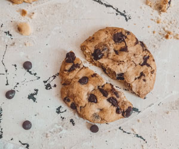

This recipe makes 5-6 dozen cookies, so prepare yourself for a long day of cookie making! This recipe is great for a bake sale or for a party.

Cook's Notes:
Keep in mind this is a "chocolate chip" cookie and therefore the quality of the final product will be greatly effected by the quality of the chips used. Although the semi-sweet "morsels" that we all know from the yellow bag are serviceable, I'd suggest combining such kid-friendly fodder with something a bit more daring, say dark chocolate chips/chunks in the 68% cocoa range. Oh, and remember you can chop your own.
The darker the sugar you use, the chewier your cookies will be.
Makes about 2 dozen cookies.
Keep in mind this is a "chocolate chip" cookie and therefore the quality of the final product will be greatly effected by the quality of the chips used. Although the semi-sweet "morsels" that we all know from the yellow bag are serviceable, I'd suggest combining such kid-friendly fodder with something a bit more daring, say dark chocolate chips/chunks in the 68% cocoa range. Oh, and remember you can chop your own.
The darker the sugar you use, the chewier your cookies will be.
Makes about 2 dozen cookies.
Active time: 20 minutes
Total time: 1 hour 50 minutes
Prep: 20 min
Inactive: 1 hr
Cook: 30 min
Contact Us with Questions ►
Total time: 1 hour 50 minutes
Prep: 20 min
Inactive: 1 hr
Cook: 30 min
Contact Us with Questions ►
Ingredients
- 16 Tbsp. (2 sticks) unsalted butter
- 12 oz. (2 1/2 cups) bread flour
- 1 tsp. kosher salt
- 1 tsp. baking soda
- 2 oz. (4 1/2 Tbsp.) granulated sugar
- 8 oz. (1 cup) light brown sugar
- 1 large egg
- 1 large egg yolk
- 1 oz. (2 Tbsp.) whole milk
- 1 1/2 tsp. vanilla extract
- 12 oz. chocolate chips
Directions
- Melt the butter in a 2-quart saucepan over low heat, then set aside to cool slightly.
- Sift together the flour, salt and baking soda onto a paper plate.
- Pour the butter into your stand mixer’s work bowl. Add the sugars and beat with the paddle attachment on medium speed for 2 minutes.
- Meanwhile in a separate bowl, whisk together the whole egg, egg yolk, milk and vanilla extract.
- Slow the mixer to "stir" and slowly work the egg mixture into the butter and sugar. Mix until thoroughly combined, about 30 seconds.
- Using the paper plate as a slide, gradually integrate the dry ingredients, stopping a couple of times to scrape down the side of the bowl with a rubber spatula
- Once the flour is worked in, drop the speed to “stir” and add the chocolate chips.
- Chill the dough for 1 hour.
- Heat the oven to 375 degrees F and place the racks in the top third and bottom third of the oven.
- Scoop the dough into 1 1/2-ounce portions onto parchment paper-line half sheet pans, 6 cookies per sheet.
- Bake two sheets at a time for 15 minutes, rotating the pans halfway through.
- Remove from the oven, slide the parchment with the cookies onto a cooling rack, and wait at least 5 minutes before devouring.

Five minutes out of the oven these are the best ever!
These cookies are perfect.
Alton Brown is a foodie phenomenon: a great cook, a very funny guy, and—underneath it all—a science geek who’s as interested in the chemistry of cooking as he is in eating. (Well, almost.)
Vist Alton Browns webpage ►